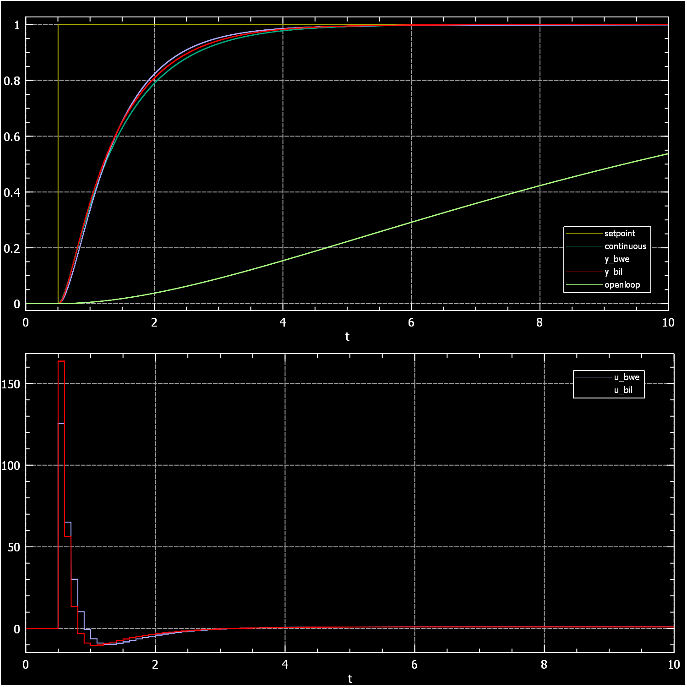
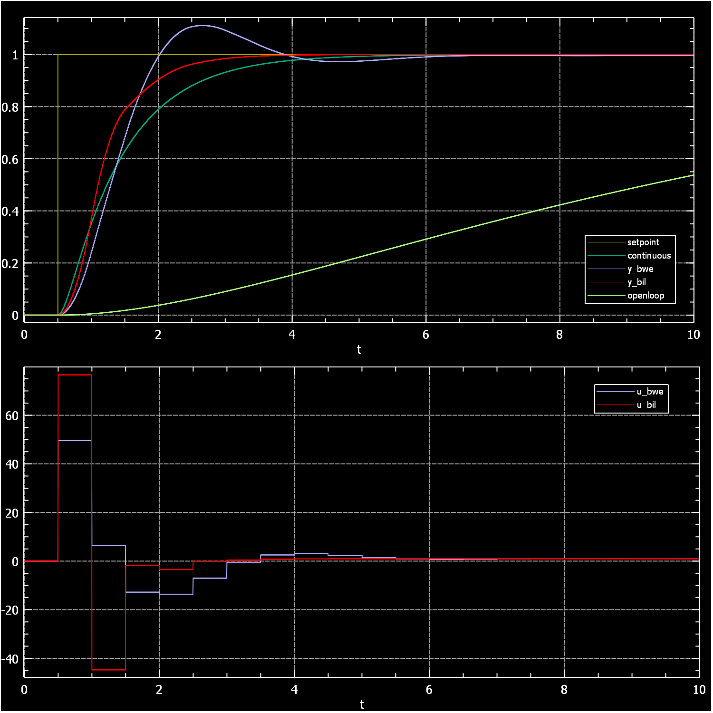
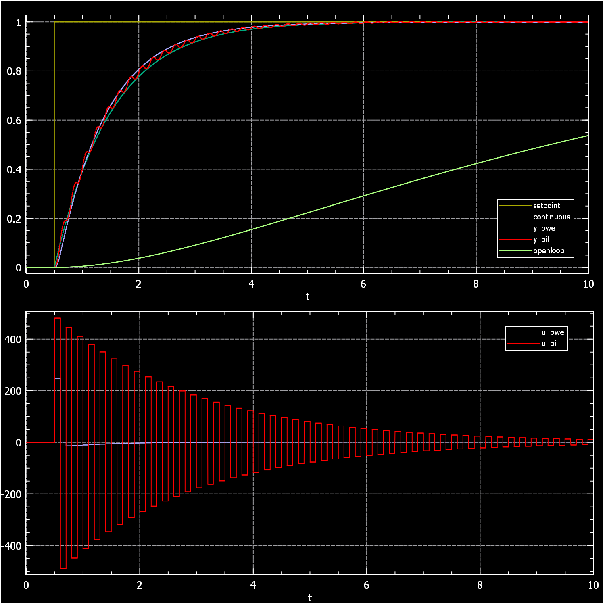
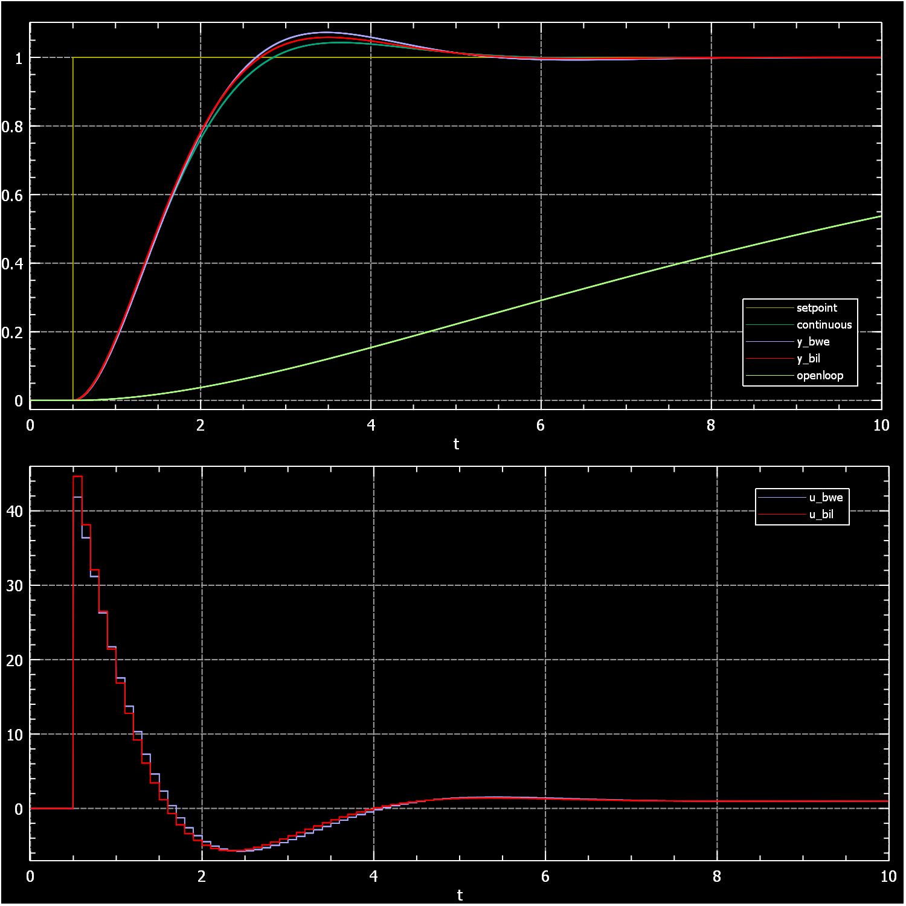
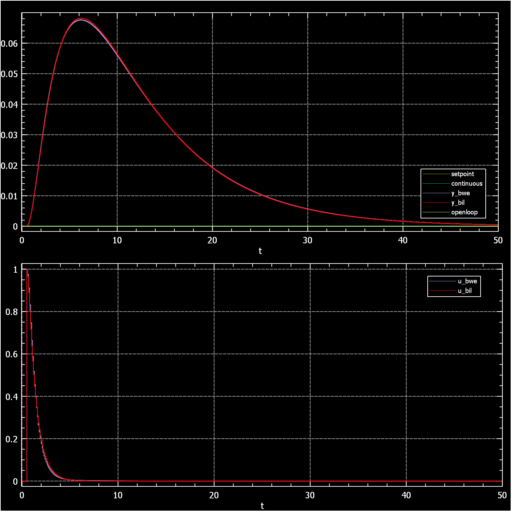
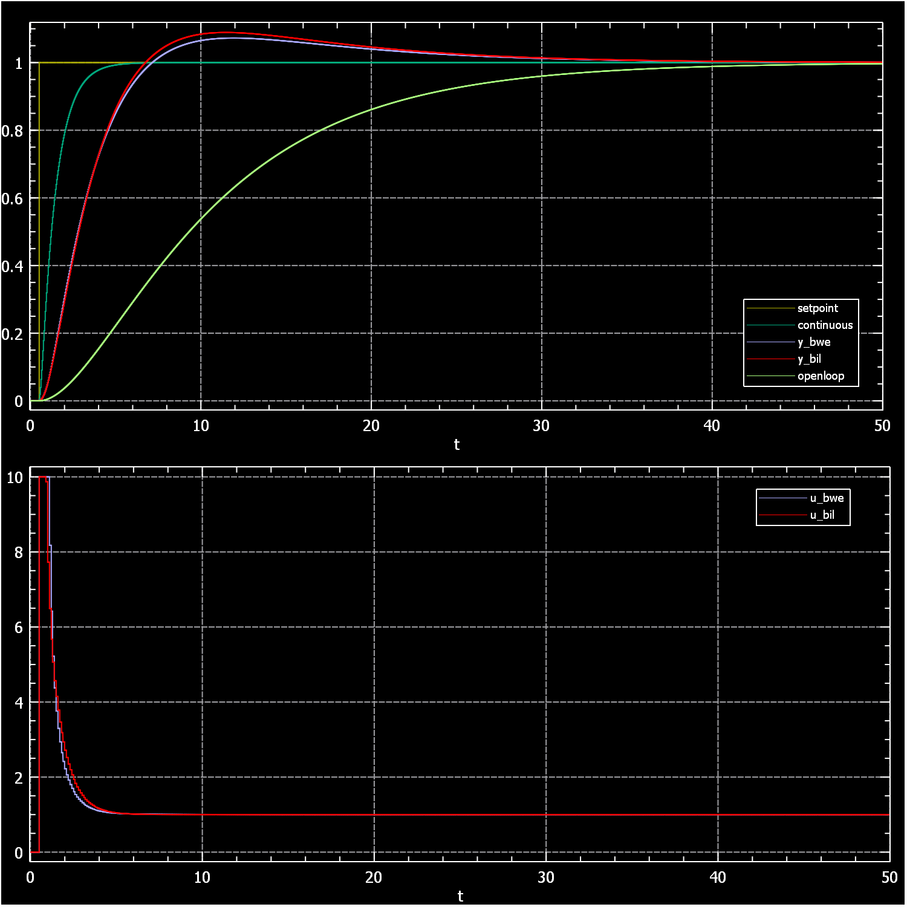
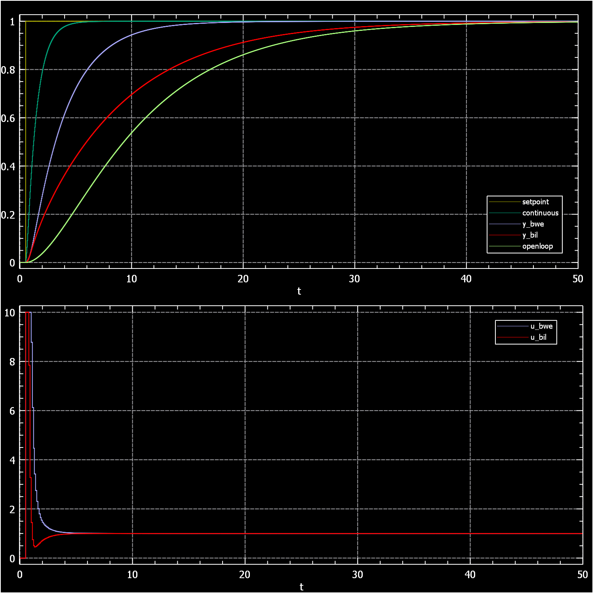

A implementation of several common PID controller transfer functions in C++, header only, without dependencies.
Realized PID transfer functions
Anti-windup
Initialization
Simulation of a pid in closed loop with a second order test system
`u(t)=K_p*e(t)+K_i*int_0^t e(x)dx+K_d*(d e(t))/(dt)`
By Laplace transformation we get:
`u(s)=K_p*e(s)+(K_i)/s * e(s)+K_d*s*e(s)`
Dividing by e(s) gives us the transfer function which is just the ratio of the output to the input signal. Transfer functions of linear ODEs are always rational which makes them handy for manipulating. You can express things like concatenation, addition or feedback by simple algebraic operations. The transfer function of a PID in canonical rational form is:
`(u(s))/(e(s))=(K_d*s^2+K_p*s+K_i)/s`
This transfer function is not proper meaning it is unbounded when the frequencies approach infinity. This is a problem when we want to realize it in some physical form. The usual remedy is to add another pole which acts as a low pass filter to limit the bandwidth. A realizable transfer function of a PID would be:
`(u(s))/(e(s))=(K_d*s^2+K_p*s+K_i)/s * 1/(Tf*s+1)`
The filter time constant Tf is usually determined by the noise level and required bandwidth. But it cannot be arbitrarily low. A minimum of about 20% of the sampling time is necessary to avoid problems with the numerical integration of the ODE. Obviously when you want more bandwidth you also need a higher sampling frequency.
`(u(s))/(e(s))=G*(Ti*s+1)/(Ti*s)*(Td*s+1)*1/(Tf*s+1)`
Its zeros are simply the reciprocal of the time constants:`s_0=-1/(Ti),s_0=-1/(Td)`
There is no difference between the integration and differential time parameter except for the gain. If you adjust for gain Ti and Td are exchangeable. The disadvantage of this function is that you cannot have conjugate complex zeros without using complex arithmetic which this implementation does not support.
Skogestads IMC tuning rules can be applied to this controller.
Skogestad, Sigurd. (2004). Simple Analytic Rules for Model Reduction and PID Controller Tuning. Journal of Process Control. 13. 291-309. 10.1016/S0959-1524(02)00062-8.`(u(s))/(e(s))=(Kp+(Ki)/s+Kd*s)*1/(Tf*s+1)`
The parameters are not very meaningful to describe the dynamics but it is the most versatile PID since it can represent all variations PID, PI, PD, ID, P, I and D controllers. Also it can express conjugate complex zeros with real valued parameters:`s_0=-(sqrt(Kp^2-4*Kd*Ki)+Kp)/(2*Kd),s_0=(sqrt(Kp^2-4*Kd*Ki)-Kp)/(2*Kd)`
The site pidtuner can compute tuning parameters for it.
`(u(s))/(e(s))=Kp*(1+1/(Ti*s)+(Td*s)/((Td)/N*s+1))`
The low pass filter is applied only to the differential term and its time constant is given as `Tf = (Td)/N`. This is somewhat confusing since the differential time parameter and noise filtering are usually unrelated. Also the zeros depend on N in a complicated way:`s_0=-(sqrt(N^2*Ti^2+(-4*N^2-2*N)*Td*Ti+Td^2)+N*Ti+Td)/((2*N+2)*Td*Ti)`
`s_0=(sqrt(N^2*Ti^2+(-4*N^2-2*N)*Td*Ti+Td^2)-N*Ti-Td)/((2*N+2)*Td*Ti)`
Nonetheless this PID is common probably because it is supported by Matlab where you also can find a function for tuning it.`(u(s))/(e(s))=Kp*(1+1/(Ti*s)+Td*s)*(1/(Tf*s+1))`
The zeros do not depend on the filter parameter:`s_0=-(sqrt(Ti^2-4*Td*Ti)+Ti)/(2*Td*Ti),s_0=(sqrt(Ti^2-4*Td*Ti)-Ti)/(2*Td*Ti)`
There are lots of tuning methods for it.
Advanced Methods of PID Controller Tuning for Specified Performance.Solutions for u(t) with the sampled function e(t) are approximated by backward Euler and Tustin integration.
| Series PID | Backward Euler | Bilinear/Tustin |
| Parallel PID | Backward Euler | Bilinear/Tustin |
| N-Standard PID | Backward Euler | Bilinear/Tustin |
| Standard PID | Backward Euler | Bilinear/Tustin |
The test system is second order with two time constants 3 and 10 seconds and a DC gain of 1.
`H:(y(s))/(u(s))=1/((3*s+1)*(10*s+1))`
`K:(u(s))/(e(s))=G*(Ti*s+1)/(Ti*s)*(Td*s+1)*1/(Tf*s+1)`
`Ti=10, Td=3, G = 10`
This is a setting you likely do not want in a real world application. While the tracking performance is excellent, disturbance rejection is rather sluggish due to the long integration times. Also making a slow system respond that fast requires to kick it really hard. The kick is not a fault of the controller but a result of the target specification.The continuous closed loop system has the transfer function:
`C:(y(s))/(r(s))=(K*H)/(1+K*H)`
where H is the test system and K the continuous PID controller. r(s) is the set-point function. The y(s) signal of this system is plotted as the green curve for reference.
| Signal | Value | Condition |
|---|---|---|
| setpoint | r(t) | |
| u_bwe | u(t) of K with backward euler integration | e(t) = setpoint - y_bwe |
| u_bil | u(t) of K with bilinear integration | e(t) = setpoint - y_bil | y_bwe | y(t) of H | u(t) = u_bwe | y_bil | y(t) of H | u(t) = u_bil | continuous | y(t) of C | r(t) = setpoint | openloop | y(t) of H | u(t) = setpoint |





Even with reduced bandwidth the actuator output is almost 50 times larger than the final value. Most physical system will not have such a large range. The output can be limited by clamping. Here we use `u(t)<=10, Tf=0.1`
While this works reasonably well manipulating the output is akin to disturbance and if we have a system with slow disturbance rejection like this recovery times will be quite long.

Back-calculation limits the output value like clamping but can be tuned with a parameter, here `Tw=Ti`. But it has the same problem with slow disturbance rejection.
